KI-gestützte Geometrie-Konstruktion
Dokumentation einer schrittweisen Konstruktion eines Alu-Strangpressprofils 40×40mm
Mensch-KI-Dialog — Graz, April 2026
Ausgangslage
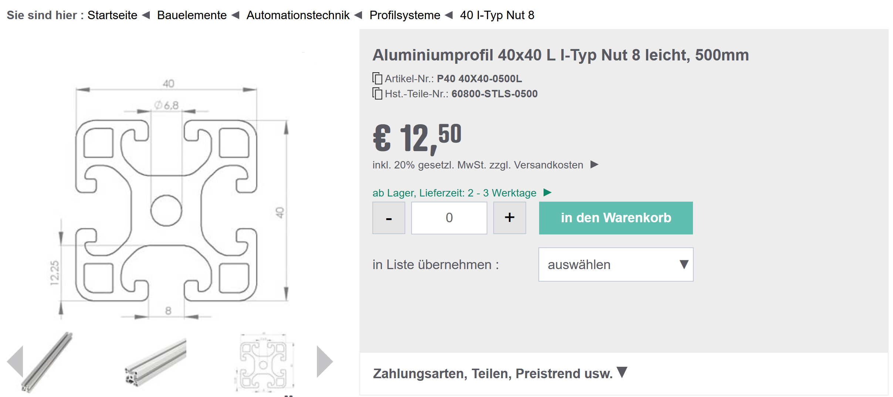
Produktseite Reichelt: Aluminiumprofil 40×40 L I-Typ Nut 8 leicht, 500mm
(Link)
— Art.Nr. P40 40X40-0500L, Hst.-Teile-Nr. 60800-STLS-0500
Ziel: Alu-Strangpressprofil 40×40mm nachkonstruieren
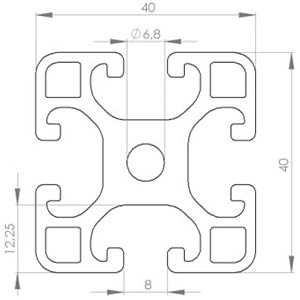
Vorlage (Datenblatt)
→
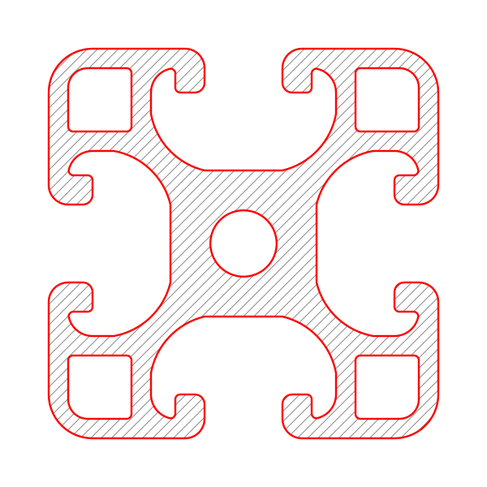
Ergebnis (KI-konstruiert)
Forschungsfrage
Welche Kompetenzen braucht ein Mensch, um mit KI Geometrie-Konstruktionen durchzuführen?
Wie robust kann KI mit unpräzisen, umgangssprachlichen Anweisungen umgehen?
Und was ändert sich dadurch am Geometrieunterricht?
Schritt 1: Quadrat
Mensch
„Ein Quadrat 20 × 40“ — korrigiert zu: „40 × 40 wollte ich sagen“
Bewertung der Anweisung:
Erster Versuch fehlerhaft (20×40 ist kein Quadrat). Selbstkorrektur war klar und eindeutig.
„Quadrat“ + „40×40“ ist mathematisch redundant, aber unmissverständlich.
KI-Umsetzung
Quadrat mit Seitenlänge 40mm, Mittelpunkt im Ursprung. Eckpunkte: (±20, ±20).
Bewertung der Umsetzung:
Korrekt ausgeführt. Erste Anweisung (20×40) wurde als Rechteck umgesetzt, Korrektur sofort übernommen.
Schritt 2: Eckenabrundung
Mensch
„Jetzt Abrundung bei den Ecken 4,5“
Bewertung der Anweisung:
Knapp aber eindeutig. „Abrundung“ impliziert Kreisbogen-Verrundung.
Einheit fehlt (cm vs. mm) — aus dem Kontext (40mm Profil) korrekt als 4,5mm interpretiert.
KI-Umsetzung
Mathematisch: Minkowski-Differenz gefolgt von Minkowski-Summe mit Radius r = 4,5mm.
profile = square.buffer(-4.5).buffer(4.5)
Erzeugt ein Quadrat mit Viertelkreisbögen (R4,5) an allen vier Ecken.
Bewertung der Umsetzung:
Korrekt. Shapely-Buffer-Technik ist der Standardweg für Offset-Verrundung.
Schritt 3: Zentralbohrung
Mensch
„In der Mitte eine Bohrung 6,8“
Bewertung der Anweisung:
Klar. „Mitte“ = Ursprung, „Bohrung“ = Kreis. 6,8 = Durchmesser (Konvention bei Bohrungen).
KI-Umsetzung
Kreis mit Mittelpunkt (0, 0) und Radius r = 3,4mm. Boolean-Differenz vom Profil.
Bewertung der Umsetzung:
Korrekt. 6,8 wurde korrekt als Durchmesser (nicht Radius) interpretiert.
Schritt 4: Nutöffnungen
Mensch
„Jede Seite hat eine Unterbrechung von 8 in der Mitte der Seite, von dort geht es dann nach innen“
Bewertung der Anweisung:
„Unterbrechung von 8“ — Breite klar. „In der Mitte“ — mittig auf der Seite, klar.
Unterdefiniert: „Von dort geht es nach innen“ lässt die Tiefe offen.
KI musste einen Wert annehmen (5mm) und nachfragen.
KI-Umsetzung
4 rechteckige Ausschnitte, je 8mm breit, mittig auf jeder Seite. Tiefe zunächst 5mm angenommen.
Später auf Anweisung korrigiert: Tiefe = 12,5mm.
Bewertung der Umsetzung:
Grundform korrekt. Tiefe musste erfragt werden — sinnvolles Verhalten bei unterdefinierter Angabe.
Schritt 5: Nut-Eintrittskanten abrunden
Mensch
„An diesen Ecken machen wir eine Abrundung von 2mm Radius. Es geht von dort weg, jeweils vier Millimeter Richtung Kern.“
Bewertung der Anweisung:
Zwei Anweisungen in einem Satz: (1) R2-Abrundung, (2) Nuttiefe 4mm.
„An diesen Ecken“ — bezieht sich auf die Nut-Eintrittskanten, war im Kontext klar.
Problem: KI interpretierte die Abrundung zunächst falsch (am Nutboden statt an der Eintrittskante).
KI-Umsetzung
1. Versuch (falsch): R2 an den Nutboden-Ecken (konkave Ecken).
Korrektur nach Feedback: R2 an den Eintrittskanten (konvexe Ecken des Materials, wo Außenseite in Nutwand übergeht).
Technik: profile.buffer(-2).buffer(2) rundet konvexe Ecken.
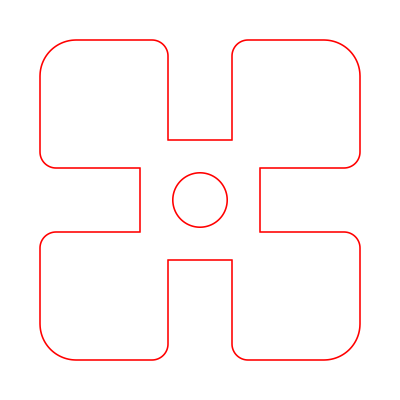
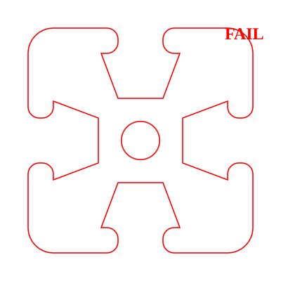
Links: korrekt (R2 an Eintrittskante). Rechts: FAIL (R2 am Nutboden, zu großer Radius).
Bewertung der Umsetzung:
Erster Versuch falsch. „Diese Ecken“ war mehrdeutig — es gibt 8 Ecken pro Nut.
Die Korrektur gelang erst nach explizitem Hinweis: „Von der Außenkante in die Nut hinein“.
Erkenntnis: Referenzierung ist kritisch
„An diesen Ecken“ — welche Ecken? Eine Nut hat 4 Innenecken und 2 Eintrittskanten.
Der Mensch meinte die Eintrittskanten, die KI verstand die Innenecken.
Präzise Referenzierung von geometrischen Elementen ist eine Kernkompetenz,
die auch bei KI-Nutzung unverzichtbar bleibt.
Schritt 6: Punktbeschriftung (A, B)
Mensch
„Am Boden der Nut liegen die zwei Eckpunkte A und B auf einer Seite. Bei der Nut in einer Tiefe von 4mm auf der Seitenwand der Nut ein Punkt C.“
Bewertung der Anweisung:
Klar und präzise. Definiert Punkte durch ihre Lage relativ zur Nut-Geometrie.
KI-Umsetzung
A = (−4, 7.5), B = (4, 7.5) am Nutboden der oberen Nut.
C auf der Nutseitenwand bei 4mm (später 5mm) Tiefe ab Außenkante.
Alle Punkte 4-fach gespiegelt.
Bewertung der Umsetzung:
Korrekt platziert. Späteren Verschiebung von C um 1mm wurde korrekt umgesetzt.
Schritt 7: Vereinfachung der Beschriftung
Mensch
„Mach A und B gleich, weil die sind eh gespiegelt. C und D sind auch gespiegelt, mach daraus einfach C.“
Bewertung der Anweisung:
Pragmatisch und klar. Nutzt die Symmetrie: es genügt, eine Hälfte einer Nut zu beschriften.
Mathematisch: Identifikation äquivalenter Punkte unter der Spiegelungssymmetrie D4.
KI-Umsetzung
Nur noch A, C, E an der rechten Hälfte der oberen Nut beschriftet. Rest ergibt sich durch Symmetrie.
Bewertung der Umsetzung:
Korrekt vereinfacht. Symmetrie-Argumentation sauber umgesetzt.
Schritt 8: T-Nut-Hinterschnitt (C → E)
Mensch
„Jeweils von C und D, jetzt verbreitern wir die Nut um 4mm nach außen. Es entsteht aber keine Ecke, sondern wieder eine Rundung mit 1mm Radius.“
Bewertung der Anweisung:
Die Verbreiterung ist klar (4mm seitwärts, Punkt E entsteht).
Missverständnis: Die KI erzeugte eine T-Nut mit waagrechtem Absatz.
Der Mensch wollte: Von E eine schräge Linie zum Nutboden.
Das wurde erst in Schritt 9 („E ist die neue Verbindung zu B“) klar.
KI-Umsetzung
1. Versuch (falsch): Klassische T-Nut mit rechtwinkligem Absatz erzeugt.
Rückgängig gemacht auf Anweisung des Nutzers.
2. Versuch: Explizites Polygon mit Punkten B→C→E→A definiert,
wobei E→A eine Schräge bildet.
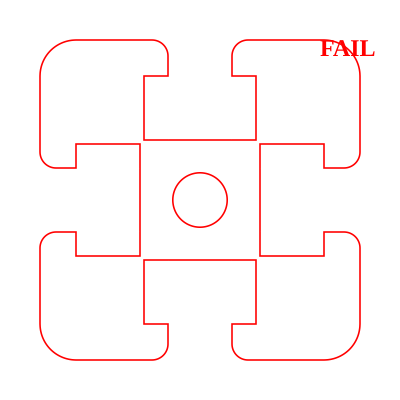
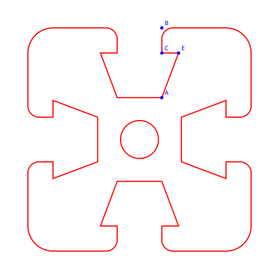
Links: FAIL (T-Nut mit rechtwinkligem Absatz). Rechts: korrekt (schräge Flanke).
Bewertung der Umsetzung:
Erster Versuch: KI assoziierte „Verbreiterung“ mit klassischer T-Nut (rechtwinkliger Hinterschnitt).
Der Mensch meinte eine schräge Flanke. Erst durch schrittweise Punkt-für-Punkt-Konstruktion gelöst.
Erkenntnis: Implizites Wissen vs. explizite Anweisung
Die KI hat „Nut verbreitern“ mit ihrem Vorwissen über T-Nuten interpretiert
und eine Standard-T-Nut erzeugt. Der Mensch hatte aber eine andere Form im Sinn.
Lösung: Punkt-für-Punkt-Konstruktion statt Formbezeichnungen.
Das Benennen von Eckpunkten und schrittweises Aufbauen erwies sich als robustester Kommunikationsweg.
Schritt 9: Verrundung bei C
Mensch
„C hat einen Millimeter Rundungsradius.“ — dann: „Lass C wieder eine Ecke sein.“
Bewertung der Anweisung:
Erste Anweisung klar. Die KI hatte Schwierigkeiten, nur C zu verrunden ohne andere Geometrie zu verändern.
Pragmatische Lösung: Zurück zur scharfen Ecke.
KI-Umsetzung
Buffer-basierte Verrundung betrifft immer alle Ecken gleichen Typs.
Selektive Verrundung einzelner Ecken ist mit Shapely-Buffern nicht direkt möglich.
Versuch mit konkaver Verrundung veränderte die Gesamtgeometrie → zurückgenommen.
Bewertung der Umsetzung:
Technische Limitierung: Globale Buffer-Operation kann nicht einzelne Ecken ansprechen.
Für selektive Verrundung wäre ein lokaler Bogen-Einsatz nötig (manuelles Ersetzen der Ecke durch einen Kreisbogen).
Erkenntnis: Werkzeug bestimmt Möglichkeiten
Die Shapely-Buffer-Methode (buffer(-r).buffer(r)) ist elegant für
globale Verrundung, versagt aber bei selektiver Verrundung einzelner Ecken.
In einem echten CAD-System (z.B. CadQuery, FreeCAD) kann man einzelne Kanten verrunden.
Die Wahl des Werkzeugs begrenzt, was formulierbar ist.
Schritt 10: Punkt D und Kreisbogenkonstruktion
Mensch
„Punkt D, von A aus gesehen 45 Grad nach rechts oben in einer Entfernung von 8mm.
Nehmen wir A und D als Eckpunkte der Basis eines gleichschenkligen Dreiecks.
Die Spitze M liegt links über A. Die Höhe des Dreiecks auf M ist 15.
Konstruiere einen Kreisbogen von A bis D mit Mittelpunkt M und Radius MA.“
Bewertung der Anweisung:
Komplex aber mathematisch korrekt formuliert:
- Polarkoordinaten für D (Winkel + Abstand von A)
- Gleichschenkliges Dreieck zur Definition des Kreismittelpunkts
- Kreisbogen über Mittelpunkt + Radius + Start/Endpunkt
Bemerkenswert: Der Mensch nutzt hier fortgeschrittene geometrische Konstruktionsmethoden,
um einen präzisen Kreisbogen zu definieren — genau die Art von Kompetenz,
die im KI-Zeitalter
wichtiger wird, nicht weniger.
KI-Umsetzung
Noch ausstehend. Mathematische Formulierung:
| Element | Definition | Wert |
|---|
| A | Nutboden rechts | (4, 7.5) |
| D | A + 8·(cos 45°, sin 45°) | ≈ (9.66, 13.16) |
| m = |AD| | Basis des Dreiecks | 8mm |
| S | Mittelpunkt von AD | ≈ (6.83, 10.33) |
| M | S + 15·n, n ⊥ AD nach links | ≈ (−3.78, 20.94) |
| r = |MA| | Kreisradius | ≈ 15.53mm |
| Bogen | Kreisbogen von A nach D, Mittelpunkt M | |
Schritt 10a: Selektive Verrundung — B mit R2, C scharf
Mensch
„B hat jeweils 2mm Rundung als Radius.“ — „C hat einen Millimeter Rundungsradius.“ — dann: „Lass C wieder eine Ecke sein.“
Bewertung der Anweisung:
Klar formuliert. Der Mensch erkennt, dass die KI mit der selektiven Verrundung kämpft, und wählt pragmatisch die scharfe Ecke.
KI-Umsetzung
Lösung: Zweistufiger Ansatz — erst einfachen Schlitz schneiden und R2 anwenden (betrifft nur B),
dann Hinterschnitt nachträglich hinzufügen (C bleibt scharf).
Dies umgeht die Limitierung der globalen Buffer-Operation.
Bewertung der Umsetzung:
Kreative Lösung für die technische Limitierung. Reihenfolge der Operationen als Ersatz für selektive Verrundung.
Schritt 11: Punkt D — Polarkoordinaten
Mensch
„Punkt D, von A aus gesehen 45 Grad nach rechts oben in einer Entfernung von 8mm.“
Bewertung der Anweisung:
Präzise Polarkoordinaten-Angabe relativ zu A. Abstand wurde von 10mm auf 8mm korrigiert.
KI-Umsetzung
D = A + 8·(cos 45°, sin 45°) ≈ (9.66, 13.16).
Später angepasst: D_x = G_x, sodass D exakt unterhalb von G liegt. Dabei wird |AD| = 8mm beibehalten,
D_y ergibt sich aus dem Satz des Pythagoras: D_y = A_y + √(8² − (D_x−A_x)²).
Bewertung der Umsetzung:
Korrekt. Die nachträgliche Anpassung (D unter G) erforderte Neuberechnung — sauber gelöst.
Schritt 12: Kreisbogenkonstruktion via Dreieck
Mensch
„Nehmen wir A und D als Basis eines gleichschenkligen Dreiecks. Die Spitze M liegt links über A.
Die Höhe des Dreiecks auf M ist 15. Konstruiere einen Kreisbogen von A bis D mit Mittelpunkt M.“
Bewertung der Anweisung:
Mathematisch anspruchsvolle Konstruktion, korrekt formuliert:
- Gleichschenkliges Dreieck ADM mit Basis m = AD
- M auf der Mittelsenkrechten von AD, Höhe h auf die Basis
- Kreisbogen mit Mittelpunkt M, Radius |MA| = |MD|
Die Höhe wurde iterativ angepasst: 15 → 10 → 6mm.
KI-Umsetzung
1. Versuch (fehlgeschlagen): Kreisbogen direkt in die Nut-Geometrie (Shapely-Polygon) eingebaut.
Die großen Bögen überlappten bei 90°-Rotation → Shapely-Topologiefehler.
2. Versuch (fehlgeschlagen): make_valid() löste das Problem nicht zufriedenstellend — Geometrie „abgeschossen“.
3. Versuch (Erfolg): Kreisbogen als separate grüne SVG-Linie gezeichnet,
unabhängig von der roten Shapely-Geometrie. Verwendet SVG-Arc-Befehl (<path d="... A ...">).
Erst als Overlay verifiziert, dann auf alle 8 Stellen gespiegelt.
Bewertung der Umsetzung:
Zwei Fehlversuche. Die Shapely-Buffer-Geometrie ist für Kreisbögen in Polygonen ungeeignet.
Der SVG-Arc-Ansatz (Darstellung getrennt von Geometrie) war die pragmatische Lösung.
Erkenntnis: Manchmal ist es besser, die Darstellung direkt zu manipulieren statt über den Umweg einer Geometrie-Engine.
Erkenntnis: Schrittweise Verifikation rettet den Prozess
Der Mensch bat darum, den Kreisbogen zuerst als grüne Hilfslinie einzuzeichnen,
bevor er in die Kontur integriert wird. Dieses Vorgehen — „erst zeigen, dann einbauen“ —
verhinderte, dass die Fehlversuche die bestehende Arbeit zerstörten.
Visuelle Verifikation vor irreversibler Änderung ist eine Schlüsselstrategie
bei der Zusammenarbeit mit KI.
Schritt 13: Punkte F und G
Mensch
„Von E aus liegt 2,5mm darüber der Punkt F.“
„Der Punkt G, 2,5 Zentimeter rechts von E.“ — korrigiert zu: „Millimeter, nicht Zentimeter.“
Bewertung der Anweisung:
F klar definiert. Bei G Einheitenfehler (cm statt mm) — Selbstkorrektur nach Rückfrage der KI.
Bemerkenswert: Die KI hat die Inkonsistenz erkannt (25mm wäre außerhalb des 40mm-Profils) und nachgefragt.
KI-Umsetzung
F = (E_x, E_y + 2.5) — 2,5mm über E.
G = (E_x + 2.5, E_y) — 2,5mm rechts von E.
Später: D_x an G_x angepasst (D exakt unterhalb von G).
Bewertung der Umsetzung:
Korrekt. Einheitenfehler wurde erkannt und höflich nachgefragt.
Schritt 14: Verbindung D–G und iterative Höhen-Anpassung
Mensch
„Verbinde D und G mit der grünen Linie. Entferne die Verbindung von D nach C.“
„Verringere die Höhe h auf m des Dreiecks ADM um 5mm.“
„Um weitere 4mm verringern.“
Bewertung der Anweisung:
Klare iterative Anpassung. Der Mensch nutzt visuelle Rückmeldung, um den Kreisbogen
schrittweise zu optimieren (h: 15 → 10 → 6mm).
Das ist typisches CAD-Verhalten: Parameter tweaken bis es passt.
KI-Umsetzung
Grüne Linie D→G auf allen 8 Positionen.
Höhe h iterativ angepasst, M und Kreisbogen jeweils automatisch neu berechnet.
Alle abhängigen Elemente (M-Position, Radius, Bogenform) werden korrekt aktualisiert.
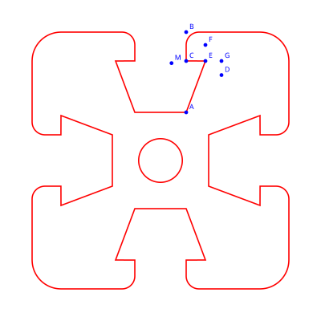
Alle Punkte: A, B, C, D, E, F, G, M
Bewertung der Umsetzung:
Parametrische Abhängigkeiten korrekt umgesetzt. Die Dreieckskonstruktion garantiert,
dass M immer auf der Mittelsenkrechten von AD liegt und |MA| = |MD| gilt.
Erkenntnis: Iteratives Arbeiten braucht parametrische Modelle
Die schrittweise Anpassung der Höhe h (15→10→6) zeigt:
Geometrische Konstruktionen müssen parametrisch aufgebaut sein,
damit Änderungen an einem Wert alle abhängigen Elemente automatisch aktualisieren.
Das ist eine weitere Kernkompetenz: Konstruktionen so aufbauen,
dass sie robust gegenüber Parameteränderungen sind.
Schritt 15: Kreisbogen G–F und Linie F–E
Mensch
„Wir führen die grüne Linie weiter als Kreisbogen zwischen G und F. Der Kreismittelpunkt ist E.“
„Das war genau seitenverkehrt.“ (Korrektur der Bogenrichtung)
„Nun noch eine grüne Verbindung F nach E.“
Bewertung der Anweisung:
Kreisbogen über drei Punkte (G, F auf der Kreislinie, E als Mittelpunkt) ist eindeutig definiert.
Die Bogenrichtung war beim ersten Versuch falsch — der Mensch erkannte dies visuell sofort.
Erkenntnis: „Kreisbogen von G nach F“ definiert nicht eindeutig, welcher der zwei möglichen Bögen gemeint ist.
KI-Umsetzung
Kreisbogen G→F mit Mittelpunkt E, Radius |EG| = |EF| = 2,5mm (Viertelkreis).
1. Versuch: falscher Sweep (nach innen statt außen) → korrigiert.
Gerade F→E hinzugefügt.
Grüner Linienzug komplett: A ⌒ D → G ⌒ F → E
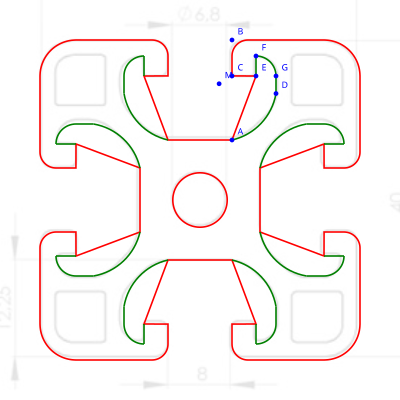
Rot: bestehende Kontur (gerade A→E). Grün: geplanter Ersatz mit Bögen.
Bewertung der Umsetzung:
Bogenrichtung erforderte einen Korrekturversuch. SVG-Arc sweep-flag ist nicht intuitiv.
Schritt 16: Integration der Bögen in die Kontur (fehlgeschlagen)
Mensch
„Kannst du das versuchen, ohne dass du den Rest wieder abschießt?“
(Nach dem Versuch:) „Bitte wieder zurück, da ist ein völliges Chaos entstanden.“
Bewertung der Anweisung:
Der Mensch antizipiert das Problem korrekt („ohne abschießen“) und reagiert schnell mit Rücknahme.
KI-Umsetzung
Fehlgeschlagen. Versuch, die Kreisbögen als Punktlisten in das Shapely-Polygon einzubauen.
Problem: Die Bogen-Approximation erzeugte ein selbstschneidendes Polygon, das bei der
4-fach-Rotation und Boolean-Differenz zu Topologiefehlern führte.
Rückgängig gemacht. Grüne Overlay-Linien bleiben als Vorschau bestehen.
Bewertung der Umsetzung:
Dritter fehlgeschlagener Integrationsversuch. Shapely kann Kreisbögen nur als Polygon-Approximation darstellen,
was bei komplexen Boolean-Operationen zu numerischen Instabilitäten führt.
Fazit: Für die Integration brauchen wir entweder ein echtes CAD-Tool (CadQuery/FreeCAD)
oder den Weg über direkte SVG-Manipulation (ohne Shapely-Geometrie).
Erkenntnis: Grenzen der Werkzeugkette
Die Konstruktion ist konzeptionell abgeschlossen — alle Punkte, Bögen und Linien sind definiert.
Die Darstellung als Overlay (grün auf rot) funktioniert einwandfrei.
Die Integration in die Geometrie scheitert an Shapely's Limitierungen mit Kreisbögen.
Dies illustriert eine wichtige Lektion: Das richtige Werkzeug für die Aufgabe wählen
ist eine Kernkompetenz. Shapely (GIS-Bibliothek) ist nicht für präzise CAD-Konstruktionen gemacht.
Schritt 17–20: Der Kampf um den Kreisbogen D–A
Mensch
Schritt 17: „Der grüne Linienzug soll auf allen 8 Stellen sein, gespiegelt.“
Schritt 18: „Kannst du das versuchen, ohne den Rest abzuschießen?“ (Kreisbögen in rote Kontur integrieren)
Schritt 19: „Geh anders vor: Verbindung A-F-E statt A-E“ (schrittweiser Aufbau)
Schritt 20: „G-D-A statt G-A, dann D-A durch Bogen ersetzen“
Bewertung der Anweisung:
Der Mensch erkennt das Muster: schrittweise vorgehen, jeweils eine Gerade durch den nächsten
Konstruktionsabschnitt ersetzen, visuell prüfen, dann weiter. Sehr systematisch.
KI-Umsetzung
4 Fehlversuche bei der Bogen-Integration:
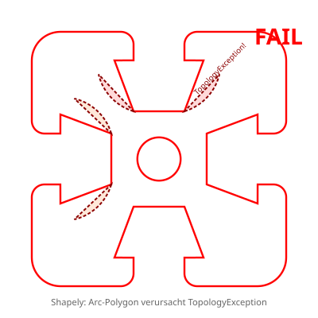
Versuch 1: Topologiefehler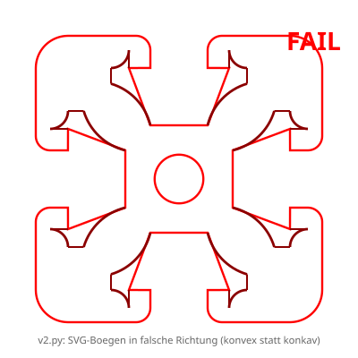
Versuch 2: Bögen falsche Richtung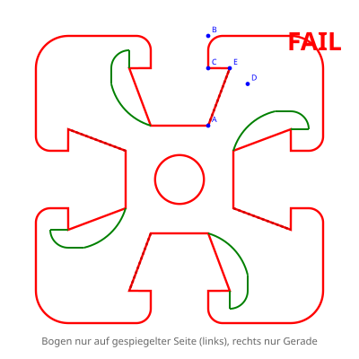
Versuch 3: Nur halbe Seite
- Versuch 1: Bogen-Punkte direkt ins Shapely-Polygon → Topologiefehler bei 4-fach-Rotation
- Versuch 2: Kompletter SVG-Neuaufbau (v2.py) → Bögen in falscher Richtung, Nutboden verschwunden
- Versuch 3: Nur rechte Seite obere Nut mit Bogen-Punktliste → visuell falsch
- Versuch 4: Bogen D→A mit gleicher Berechnung wie grün → visuell Durcheinander
Erfolgreiche Zwischenschritte:
- A→F→E statt A→E — funktionierte (mit
make_valid)
- G→D→A statt G→A — funktionierte
- Viertelkreis G⌒F in Shapely-Punktliste — funktionierte
Kernproblem: Shapely approximiert Kreisbögen als Polygone mit vielen Punkten.
Bei 4-fach-Rotation und Boolean-Differenz entstehen numerische Instabilitäten
(Self-Intersections, Topologiefehler). Der kleine Viertelkreis G⌒F (r=2.5mm) ging noch,
der große Bogen A⌒D (r≈7mm) nicht.
Bewertung der Umsetzung:
Systematisches Scheitern an den Grenzen des Werkzeugs.
Jeder Einzelschritt war logisch korrekt, aber die Kombination
aus Polygon-Approximation + Boolean-Operationen ist numerisch instabil.
Schritt 21: Durchbruch — SVG-Level Arc Replacement
Mensch
„Der Bogen ist auf grün ja schon da. Es müsste nur rot, genau derselbe Bogen, sein.
Kannst du mit der Vorschrift nicht anfangen, welche den grünen Bogen erzeugt?“
Bewertung der Anweisung:
Entscheidender Hinweis! Der Mensch erkennt: das Problem liegt nicht in der Mathematik
(der grüne Bogen ist korrekt), sondern in der Werkzeugkette.
Statt Shapely zu zwingen, Bögen zu verstehen, sollte die KI den Bogen
auf SVG-Ebene einsetzen — dort wo er bereits funktioniert.
KI-Umsetzung
Lösung: Shapely behält gerade Linien D→A.
Im SVG-Export erkennt coords_to_svg_path() jedes D→A-Punktpaar
und ersetzt den SVG-Befehl L (Linie) durch A (Arc)
mit dem vorberechneten Radius rAD.
Die Shapely-Geometrie wird nie verändert — nur die Darstellung.
Bewertung der Umsetzung:
Elegante Lösung. Trennung von Geometrie-Engine (Shapely, gerade Linien)
und Darstellung (SVG, echte Kreisbögen). Kein Topologiefehler möglich.
Erkenntnis: Trennung von Modell und Darstellung
Nach 4 Fehlversuchen kam der Durchbruch durch einen Perspektivwechsel des Menschen:
„Der grüne Bogen funktioniert doch schon — mach einfach das Gleiche in rot.“
Die KI hatte versucht, den Bogen ins Geometrie-Modell (Shapely) zu integrieren.
Die Lösung war, ihn nur in der Darstellung (SVG) einzusetzen.
Manchmal ist die beste Lösung, das Problem auf einer anderen Ebene zu lösen.
Das erfordert Verständnis für die Architektur des Systems — eine Kompetenz,
die weder rein mathematisch noch rein technisch ist.
Schritt 22–28: Der Kampf um die R1-Rundung bei C
Mensch
Schritt 22: „Entferne M, und dann eine Rundung von 1mm beim Punkt C.“
Schritt 23: „Das sind Fadenkreuze, keine Rundungen. Geh zurück.“
Schritt 24: „Versuche einen anderen Weg.“ (Shapely-Punktliste statt SVG-Arc)
Schritt 25: „Da ist ein neuer Punkt entstanden, den sollte es nicht geben.“
Schritt 26: „Komplettes Desaster. Zurück.“
Schritt 27: „Von C einen mm nach oben = P, einen mm nach rechts = Q. Spiegle C an PQ = C'.
Erstelle Viertelkreis P→Q um C'.“
Schritt 28: „Kreis geht in die falsche Richtung. Immer noch falsch. Sackgasse. Zurückbauen.“
Bewertung der Anweisung:
Schritt 27 war mathematisch brillant: Der Mensch definiert den Kreismittelpunkt C'
durch Spiegelung von C an der Achse PQ — eine elegante geometrische Konstruktion.
C' = (5, 16.5) liegt korrekt. Das Problem lag nicht an der Mathematik,
sondern an der SVG-Arc-Darstellung (sweep-flag und large-arc-flag Kombinatorik).
KI-Umsetzung
7 Fehlversuche bei R1 an C:
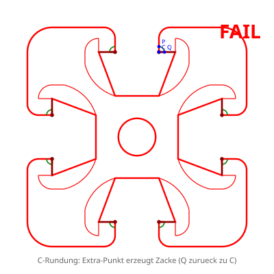
Konkav statt konvexLangsam verstehen wir uns.
- SVG-Arc-Replacement bei C-Punkt → „Fadenkreuz“ (ganzer Kreis statt Viertel)
- Sweep-flag gewechselt → Rundung weg, Fadenkreuz bleibt
- Shapely-Punktliste für Bogen → Richtung falsch
- Schlitz verkürzt für nahtlosen Übergang → Desaster
- C'-Spiegelung, Bogen als Shapely-Punkte → 270° statt 90°
- Richtung umgedreht + SVG-Arc-Replacement → falscher Bogen
- large-arc-flag gewechselt → immer noch falsch
Kernproblem: Der SVG-Arc-Befehl hat 4 Varianten (2 sweep × 2 large-arc),
und bei 8-facher Spiegelung/Rotation ergeben sich 32 Kombinationen.
Die KI hat systematisch alle falschen Varianten durchprobiert, ohne die richtige zu finden.
Bewertung der Umsetzung:
Systematisches Versagen trotz korrekter Mathematik. Das Problem ist kombinatorisch:
Die SVG-Arc-Flags (sweep, large-arc) interagieren mit Spiegelung und Rotation auf nicht-intuitive Weise.
Jeder Korrekturversuch änderte nur einen Parameter, ohne das Gesamtbild zu überprüfen.
Erkenntnis: Kombinatorische Fallen bei Spiegelung
Der SVG-Arc-Befehl (A rx,ry rotation large-arc-flag,sweep-flag x,y)
hat zwei Booleans (large-arc, sweep), die zusammen 4 verschiedene Bögen beschreiben.
Bei 4-facher Rotation × 2-facher Spiegelung ergeben sich 32 Möglichkeiten —
nur eine davon ist korrekt.
Die KI konnte die richtige Kombination nicht finden, weil sie die Flags
einzeln änderte statt das geometrische Gesamtbild zu analysieren.
Lektion: Bei kombinatorischen Problemen ist systematisches Durchprobieren
weniger effektiv als geometrisches Verständnis.
Ein Mensch hätte den Bogen einmal auf Papier gezeichnet und die Flags daraus abgeleitet.
Schritt 29: R1-Rundung bei C — Erfolg!
Mensch
„Von Punkt C einen Millimeter nach oben und einen Millimeter nach rechts, machst du zwei neue Punkte P und Q.
Spiegle C an der Achse PQ → C'. Erstelle Viertelkreis P→Q um C'.“
Nach mehreren Fehlversuchen mit Shapely-Punktlisten und SVG-Arcs:
„Ersetze C im Polygon durch P und Q, dann im SVG-Export P→Q durch Arc ersetzen — genau wie bei D→A.“
Bewertung der Anweisung:
Der Mensch definierte P, Q, C' geometrisch präzise. Nach 7 Fehlversuchen half der entscheidende Hinweis:
denselben SVG-Replacement-Ansatz wie bei D↔A verwenden.
Die Methode war bereits erprobt — der Mensch erkannte die Analogie.
KI-Umsetzung
1. C im Hinterschnitt-Polygon durch P und Q ersetzt (Shapely sieht nur geraden Knick)
2. Im SVG-Export: P→Q und Q→P Paare erkennen, durch A 1.0,1.0 ... ersetzen
3. Sweep-Flag: erster Versuch falsch (konkav statt konvex), zweiter Versuch korrekt
Funktioniert auf allen 8 Stellen.
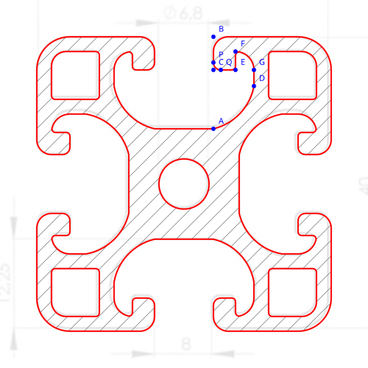
R1-Rundung bei C — korrekt auf allen 8 Stellen
Bewertung der Umsetzung:
Bewährtes Pattern (SVG-Level-Replacement) erfolgreich wiederverwendet.
Nur ein Sweep-Fehler — deutliche Verbesserung gegenüber den 7 Fehlversuchen zuvor.
Schritt 30: R0.5-Rundung bei E
Mensch
„Um den Punkt E herum ebenfalls eine Rundung mit 0,5mm.“
Bewertung der Anweisung:
Kurz und klar. Gleicher 90°-Knick wie bei C, gleiche Methode anwendbar.
KI-Umsetzung
Punkte R (0.5mm über E) und S (0.5mm links von E) definiert.
E im Polygon durch R und S ersetzt. SVG-Arc-Replacement für R/S.
Erster Versuch: S rechts von E (falsch) → korrigiert auf links.
Sweep einmal falsch → korrigiert. Dritter Versuch korrekt.
Bewertung der Umsetzung:
Richtung von S (links/rechts von E) musste korrigiert werden —
die KI hat die Laufrichtung der Kontur (Q→E, also von links nach rechts) nicht sofort richtig analysiert.
Schritt 31: R0.5-Rundung bei F (Gerade → Kreisbogen)
Mensch
„Bei F haben wir eine innere 90-Grad-Wendung, die geht schon in einen Kreisbogen über.
Wir bräuchten bei F eine innere Rundung in die andere Rundung hinein.
Keine Ahnung, wie ich das in Real Life konstruieren würde.“
Bewertung der Anweisung:
Ehrliche Reflexion: der Mensch erkennt, dass „Verrundung zwischen Gerade und Kreisbogen“
eine nicht-triviale Konstruktionsaufgabe ist. Die Frage „wie würde man das von Hand konstruieren?“
ist eine Kernfrage der Geometriedidaktik.
KI-Umsetzung
Ansatz: Gerade (R→F) und Bogen (G⌒F) jeweils um 0.5mm kürzen.
T = neuer Punkt 0.5mm unter F (auf der Geraden)
U = neuer Punkt 0.5mm vor F auf dem G⌒F-Bogen (berechnet über Winkelinkrement: Δθ = 0.5/R)
SVG-Arc-Replacement für T↔U.
Erster Versuch korrekt!
(Zwischenbild leider nicht gespeichert — Lektion: Snapshots bei jedem Schritt sichern!)
Bewertung der Umsetzung:
Erstmals eine komplexe Rundung auf Anhieb korrekt! Die Berechnung von U
(Punkt auf einem Kreisbogen in definiertem Abstand vom Endpunkt)
erfordert Bogenlängen-Parametrisierung: Δθ = s / r.
Der bewährte SVG-Replacement-Ansatz hat sich ein drittes Mal bewährt.
Erkenntnis: Verrundung Gerade–Kreisbogen
Die Konstruktion einer Verrundung zwischen einer Geraden und einem Kreisbogen
ist in der klassischen DG eine anspruchsvolle Aufgabe.
Der Fillet-Mittelpunkt liegt auf dem Abstand rfillet von der Geraden
und auf dem Abstand Rbogen + rfillet vom Bogenmittelpunkt
(bei innerer Verrundung addieren sich die Radien).
In unserem Fall war die Geometrie glücklicherweise einfach genug (90°, F exakt über E),
sodass eine Approximation über Bogenlängen-Parametrisierung genügt hat.
Die Frage des Menschen „wie würde man das von Hand konstruieren?“
zeigt, dass geometrisches Grundverständnis auch bei KI-Nutzung unverzichtbar bleibt.
Schritt 32: Eck-Quadrate (Inseln)
Mensch
„In jede der vier Ecken ein Quadrat mit Seitenlänge 6,5mm, Abstand 2mm von der Außenkante.
Eckenradius 0,5mm, nur an der Außenecke 2mm.“
Bewertung der Anweisung:
Vollständig definiert: Position, Größe, Radien, Sonderfall für die Außenecke.
Abstand zuerst 3mm, visuell als zu groß erkannt, auf 2mm korrigiert.
KI-Umsetzung
4 Quadrate als Boolean-Differenz (wie die Bohrung).
Unterschiedliche Radien: R0.5 global via buffer(-0.5).buffer(0.5),
dann Außenecke durch Clip-and-Replace mit R2-Version ersetzt.
Abstand-Korrektur (3mm → 2mm) sofort umgesetzt.
Zwei Versuche, einer für den Abstand.
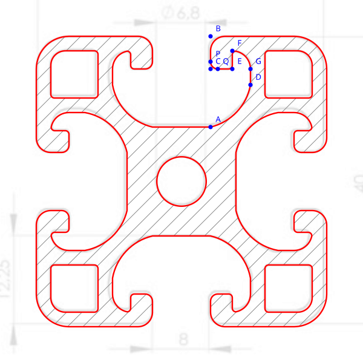
Eck-Quadrate eingefügt — interessant: die Aussparungen liegen alle ca. 1mm zu weit innen.
Bewertung der Umsetzung:
Sauber gelöst. Die Kombination aus globaler und selektiver Verrundung
(unterschiedliche Radien an verschiedenen Ecken) wurde kreativ über
Clip-and-Replace gelöst — ein Shapely-spezifischer Workaround.
Schritt 33: Schraffur und Varianten
Mensch
„Schraffiere das Innere. Verdopple die Schraffurlinien. Dann ohne Punkte als Final-Schnitt. Und eine reine Kontur als path.“
KI-Umsetzung
SVG-Pattern für 45°-Schraffur. Parametrisierte Ausgabe: mit/ohne Schraffur, mit/ohne Labels, variable Schraffurdichte.
Schritt 34: Technische Zeichnung A4 mit DIN-Bemaßung
Mensch
„A4-Rahmen mit Schriftfeld. M 2:1 bemaßt links, M 1:1 Schnitt rechts. Radien verteilen. Beschriftungen horizontal, außerhalb der Zeichnung.“
KI-Umsetzung
A4-Querformat, Schriftfeld nach EN ISO 7200 (vereinfacht), vollständige Bemaßung, Mittellinien.
Iterativ verbessert: Textpositionierung, Radien-Verteilung auf verschiedene Ecken.
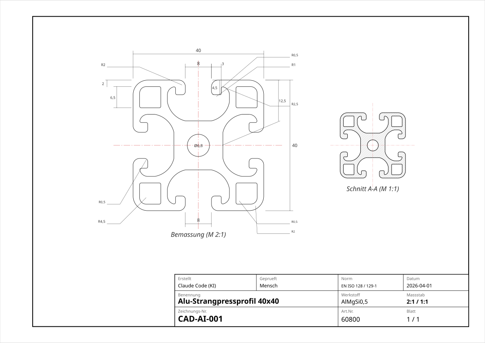
Technische Zeichnung A4 (klicken für Vollbild)
Schritt 35: STL für 3D-Drucker
Mensch
„Stelle eine Datei für den 3D-Drucker her, 10cm hoch.“
„Die Rundungen an den inneren Teilen fehlen komplett!“
KI-Umsetzung
1. Versuch (FAIL): STL verwendet Shapely-Geometrie, in der D→A noch gerade Linien sind
(der Bogen existierte nur als SVG-Darstellung). Alle inneren Rundungen fehlten.
 FAIL: 3D-Druck-Vorschau ohne innere Rundungen (Bambu Studio)
FAIL: 3D-Druck-Vorschau ohne innere Rundungen (Bambu Studio)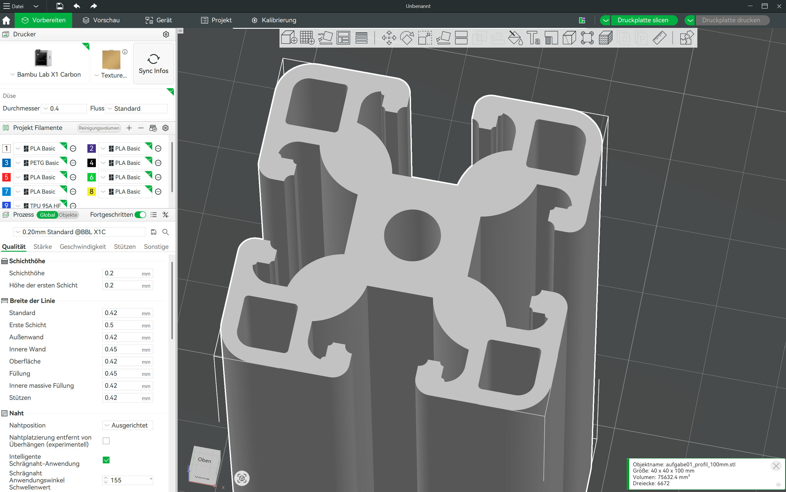
FAIL: Bögen invertiert - „Aluminium on Steroids“2. Versuch: Alle Bögen als Punktlisten in Shapely → Bögen invertiert („Steroids“).
3. Versuch (Erfolg): SVG-Pfad direkt parsen, sweep-flag bei Y-Inversion invertieren.
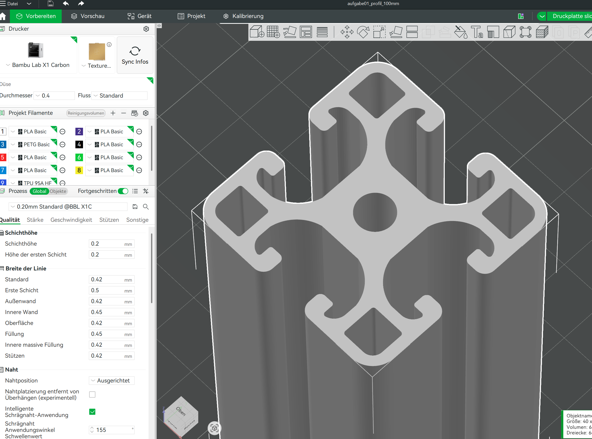
Erfolg: Alle Rundungen korrekt (Bambu Studio)
Bewertung:
Grundlegendes Architekturproblem: die SVG-Arc-Replacement-Strategie funktioniert nur für die Darstellung,
nicht für den 3D-Export. Für STL müssen die Bögen als Polygon-Approximation in Shapely vorhanden sein.
Erkenntnis: Trennung von Modell und Darstellung hat Konsequenzen für den Export.
Schritt 36: TPU-Abschlusskappe
Mensch
Gummi-Abschlusskappe für Tischfuß. 5mm hoch, 3mm Rand rings herum (46×46mm). Alle Vertiefungen ausfüllen für Formschluss.
KI-Umsetzung
Basis (2mm): volle 46×46 Fläche. Verzahnung (3mm): füllt exakt die Hohlräume des Profils. SVG + STL aus bestehendem Profil-SVG abgeleitet.
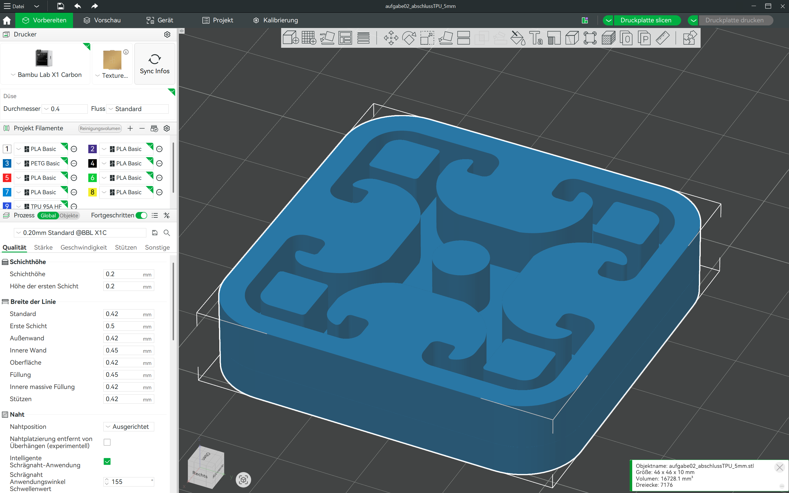
Erfolg: TPU-Abschlusskappe in Bambu StudioSchritt 37: Schrägriss und Dreitafelprojektion
Mensch
„Zeichne einen Schrägriss des Objekts. In einem weiteren Normzeichnungsblatt Grund-, Auf- und Kreuzriss, jeweils mit 10cm Höhe extrudiert.“
„Beim Schrägriss fehlen viele Linien.“ → Zurücksetzen auf Vorder-/Rückseite.
„Die Ordner müssen auch die unsichtbaren Kanten erreichen.“
„Die inneren Kanten als gestrichelte Linien im Grund- und Kreuzriss.“
Bewertung der Anweisung:
Schrittweiser Aufbau: erst Grundstruktur, dann Details.
Der Mensch erkennt sofort fehlende Elemente (Ordner, verdeckte Kanten) und korrigiert systematisch.
KI-Umsetzung
Schrägriss: Kavalierprojektion, iterativ aufgebaut:
- Vorder- und Rückseite (45°, Verkürzung 0.5) — erster Versuch mit 966 Linien = Chaos
- Umhüllende: Silhouettenlinien an den R4.5-Tangentenpunkten (H, H')
- Nut-Eintrittskanten (B→B'): erst am falschen Eckpunkt, dann am R2-Tangentenpunkt korrigiert
- Gerade Außenstrecken (Rundung↔Nut) auf der Hinterseite
- Winkel von 45° auf 30° geändert (weniger Überlappung)
- R2-Silhouettenpunkte: Tangente an Zylinderfläche in 30°-Blickrichtung (U)
- R2-Bogen U→obere Kante und R4.5-Bögen bei H/H' auf der Hinterseite
- Sichtbarkeitsanalyse: oben+rechts durchgezogen, unten+links gestrichelt
Methodische Erkenntnis: Der Schrägriss verbindet Darstellende Geometrie
(Sichtbarkeit, Silhouetten, Tangenten) mit analytischer Geometrie
(Vektorrechnung, Projektionsformeln). Die KI berechnet, was der Mensch konstruiert —
braucht aber dasselbe geometrische Verständnis.
Dreitafelprojektion: Aufriss (Schnitt mit Schraffur), Grundriss, Kreuzriss.
Iterativ verbessert: Koordinatenachsen, Ordner (durchgezogen, sehr fein), 45°-Ordner mit Viertelkreisbögen,
verdeckte Kanten (Bohrung, Pockets, Hinterschnitte) als gestrichelte Linien.
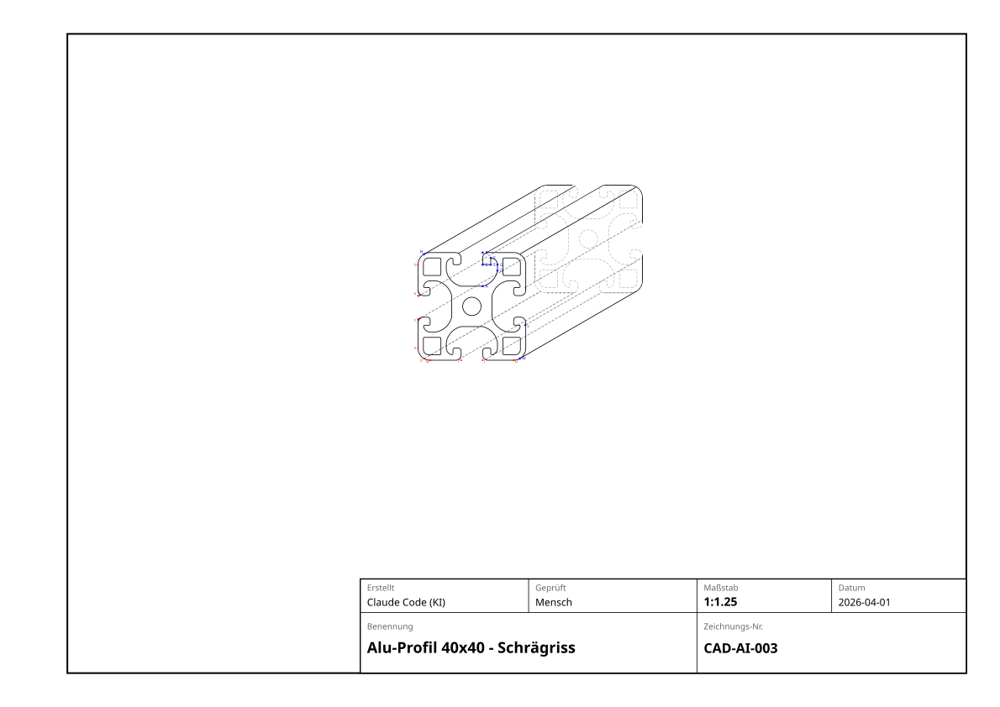
Schrägriss (Kavalierprojektion)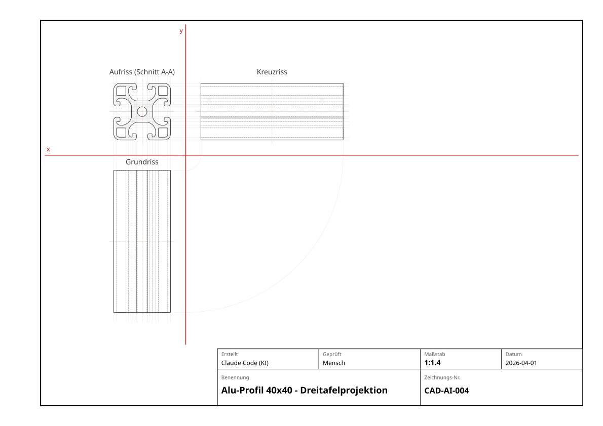
Dreitafelprojektion mit Ordnern
Bewertung der Umsetzung:
Dreitafelprojektion gelungen nach iterativer Verbesserung.
Schrägriss noch unvollständig (nur Vorder-/Rückseite, Verbindungskanten fehlen noch).
Erkenntnis: Bei komplexen Profilen ist die Sichtbarkeitsanalyse für den Schrägriss
eine nichttriviale Aufgabe — man muss entscheiden, welche Kanten von vorn verdeckt werden.
Schritt 38: Pyramide (Aufgabe 4)
Mensch
„Pyramide mit quadratischer Grundfläche, Seitenlänge 5cm, Höhe 7cm.
Schrägriss auf einem Arbeitsblatt, Grund-/Auf-/Kreuzriss auf einem zweiten.“
„Grundriss: Diagonalen nicht strichliert — das sind sichtbare Seitenkanten von oben.“
„Schrägriss: Hintere Basiskanten sind unsichtbar, also strichlieren.“
„Die Spitze muss im Aufriss und Kreuzriss mit einem Ordner verbunden sein.“
KI-Umsetzung
Kavalierprojektion (45°, Verkürzung 0.5) und Dreitafelprojektion.
Korrekturen: Grundriss-Diagonalen durchgezogen, hintere Basiskanten gestrichelt,
Ordner für Pyramidenspitze ergänzt.
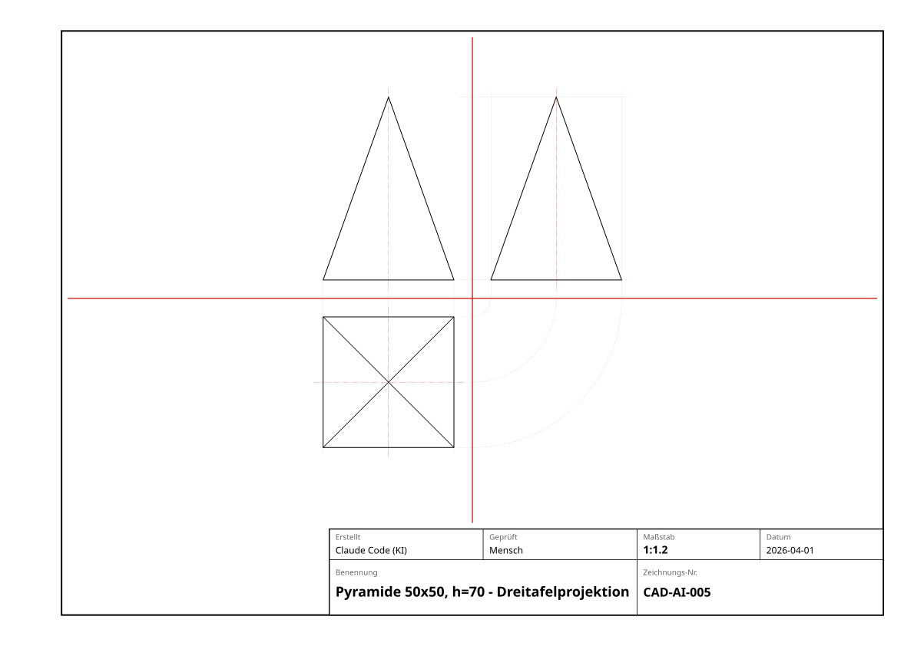
Dreitafelprojektion
Bewertung:
Grundstruktur auf Anhieb korrekt. Drei Korrekturrunden nötig:
Sichtbarkeit der Diagonalen im Grundriss, Strichlierung der hinteren Basiskanten,
Ordner-Verbindung der Pyramidenspitze.
Aufgabensammlung: GZ und DG
20 Standardaufgaben aus dem österreichischen Lehrplan
Während der Mensch Musik macht, hat die KI selbstständig je 10 Aufgaben
aus dem Geometrischen Zeichnen (Sek I) und der Darstellenden Geometrie (Oberstufe)
recherchiert, gelöst und selbst bewertet.
GZ-Aufgaben (Geometrisches Zeichnen, 3./4. Klasse)
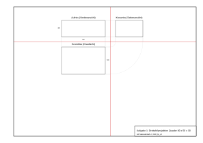
1. Dreitafel Quader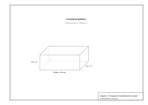
2. Schrägriss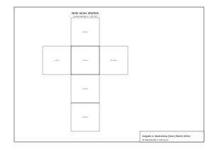
4. Würfel-Netz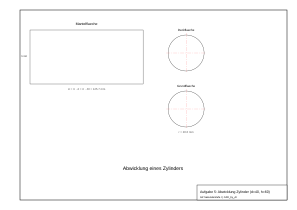
5. Zylinder-Netz6. Prisma
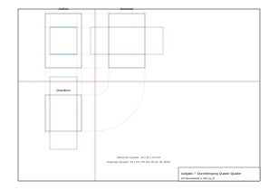
7. Durchdringung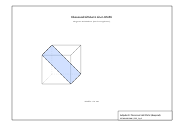
8. Ebenenschnitt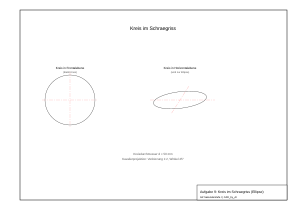
9. Kreis/Ellipse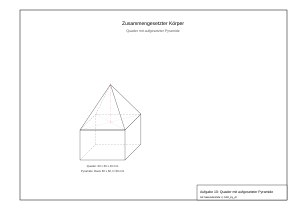
10. Verbundkörper
DG-Aufgaben (Darstellende Geometrie, 7./8. Klasse)
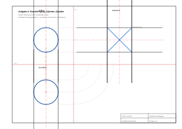
6. Zyl.-Durchdr.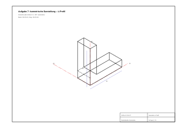
7. Isometrie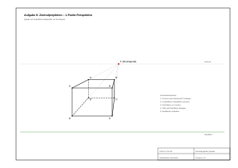
8. Perspektive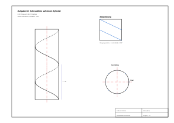
10. Schraublinie
Endergebnis
Overlay auf Vorlage
Fertiger Schnitt (schraffiert)
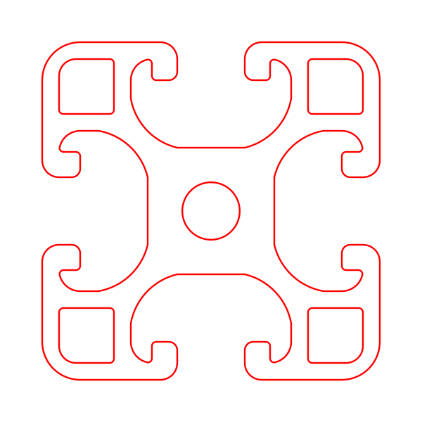
Reine Kontur
Zusammenfassung
Was funktioniert gut?
- Einfache Grundformen (Quadrat, Kreis, Rechteck) — kurze Anweisungen genügen
- Punkt-für-Punkt-Konstruktion — robustester Kommunikationsweg
- Symmetrie-Argumente — KI versteht „auf allen vier Seiten spiegeln“
- Schrittweises Vorgehen — kleine Änderungen sind sicher verifizierbar
Was ist problematisch?
- Mehrdeutige Referenzen — „diese Ecken“, „dort“ sind für KI schwer auflösbar
- Implizites Formwissen — KI assoziiert „T-Nut“ mit Standardformen, nicht mit der gemeinten Variante
- Selektive Operationen — „nur diese eine Ecke verrunden“ ist mit globalen Werkzeugen schwierig
- Rückgängig machen — kein echtes Undo; jeder Schritt muss manuell revertiert werden
- Kreisbögen in Polygonen — Shapely kennt keine echten Bögen, nur Polygon-Approximationen. Integration in bestehende Geometrie führte zu Topologiefehlern
- Einheitenfehler — cm vs. mm; KI konnte dies durch Plausibilitätsprüfung erkennen
Kernkompetenzen der Zukunft
| Kompetenz | Warum wichtig bei KI-Nutzung? |
|---|
| Präzise geometrische Fachsprache | „Konvexe Ecke“ vs. „konkave Ecke“ — KI braucht eindeutige Begriffe |
| Punkt-Referenzierung | Benannte Punkte vermeiden Mehrdeutigkeiten |
| Konstruktionsplanung | Komplexe Formen müssen in Einzelschritte zerlegt werden |
| Verifikation / visuelles Prüfen | KI-Output muss kritisch geprüft werden |
| Mathematische Modellierung | Kreisbogen über Dreieckskonstruktion definieren = höheres Denken |
| Fehlerdiagnose | „Das stimmt nicht“ genügt nicht — man muss erklären was falsch ist |
| Iteratives Verfeinern | Parameter schrittweise anpassen und visuell prüfen (h: 15→10→6) |
| Einheiten-Bewusstsein | mm vs. cm — Größenordnungen müssen zum Kontext passen |
| Werkzeugkenntnis | Wissen, was das Werkzeug kann und was nicht (Shapely vs. echtes CAD) |
Statistik
| Metrik | Wert |
|---|
| Konstruktionsschritte gesamt | 32 |
| Davon auf Anhieb korrekt | 15 (47%) |
| Fehlversuche / Rückschritte | 17 |
| Selbstkorrekturen des Menschen | 3 (Quadrat 20→40, cm→mm, Tiefe 4→5) |
| KI-Fehler durch Mehrdeutigkeit | 3 (Ecken-Referenzierung, T-Nut-Form, Bogenrichtung) |
| KI-Fehler durch Werkzeug-Limitierung | 6 (selektive Verrundung, 4× Kreisbogen-Integration, 1× SVG-Neuaufbau) |
| Entscheidender Mensch-Hinweis | „Der grüne Bogen funktioniert doch schon“ → Paradigmenwechsel |
| Punkte definiert | 8 (A, B, C, D, E, F, G, M) |
| Kreisbögen in Kontur | 1 von 2 (G⌒F via Shapely, D⌒A via SVG-Replacement) |
Generiert am 31.03.2026 — Mensch-KI-Kooperation mit Claude Code (Opus 4.6)